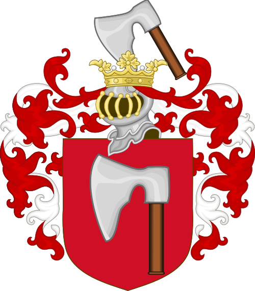
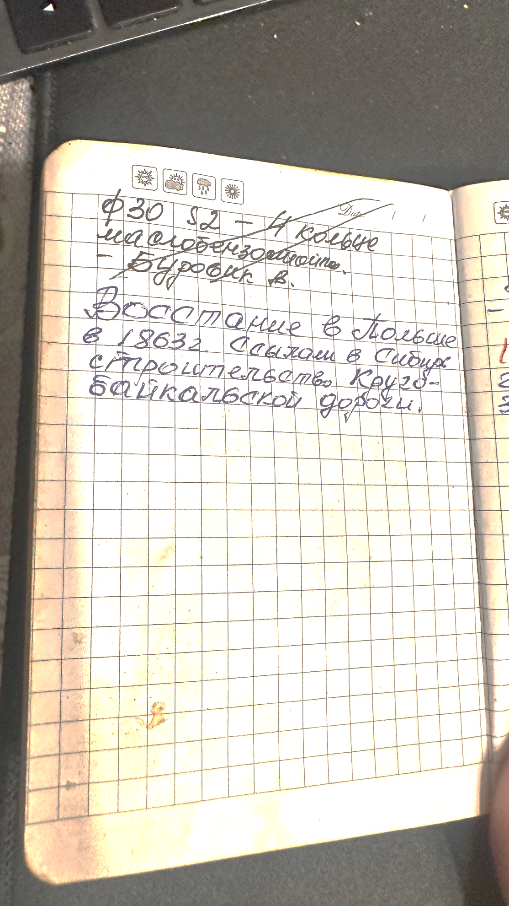

Глава I
Сабли, гербы и утраченная родина

В моём поиске есть место, где документов пока не хватает, но семейные рассказы всё равно не дают пройти мимо. У Каменских таким местом стал польский след.
В семье сохранялось представление о возможном шляхетском происхождении. Старые фотографии, паспарту и разговоры о фамилии «Камински» заставляют думать, что история Каменских может начинаться не только в Поволжье. Возможно, где-то глубже есть связь с польским миром и формой Kamieński / Kamiński.
Тётя говорила, что наша фамилия когда-то была или звучала как «Камински». Это не доказательство, но важная зацепка. Я оставляю её в книге именно в таком качестве: как семейную версию, которая ждёт своих документов.
Запись из папиной книжки
Уже во время работы над книгой я нашёл в записной книжке отца, Владимира Сергеевича Каменского, короткую запись:
«Восстание в Польше в 1863 г.
Ссылки в Сибирь. Строительство Кругобайкальской дороги».

Страница из записной книжки Владимира Сергеевича Каменского. Запись о польском восстании 1863 года.
Эта запись не доказывает польское происхождение нашей ветви. Она не называет предка и не связывает семью напрямую с участниками восстания. Но она важна: тема Польши, ссылок и Сибири уже была в записях моего отца.
Возможно, он что-то слышал от старших. Возможно, пытался проверить семейную версию. Возможно, запись связана с тем самым «Камински», о котором говорила тётя. Пока я не могу утверждать больше. Но эту страницу я сохраняю как след.
Польская версия неизбежно вызывает образы старой шляхетской культуры: сабля, герб, фамильная честь, личная свобода, достоинство. В геральдических книгах встречаются разные ветви Каменских / Kamieńskich, связанные с гербами Topór и Ślepowron. Но прямого документа, который связывал бы именно нашу линию Павла Григорьевича Каменского с конкретным гербом, пока нет. Поэтому гербы остаются не доказательством, а направлением будущей проверки.
Исторически такой путь был возможен. После разделов Речи Посполитой многие польские и польско-литовские семьи оказались внутри Российской империи. Кто-то потерял землю, кто-то прежний статус, кто-то документы. Для обедневших, но образованных семей духовное сословие могло стать способом сохранить внутреннее достоинство, образование и место в обществе.
Так появляется образ пути от сабли к кресту. Не как готовая архивная формула, а как возможная историческая метафора.
Поэтому образ «от сабли к кресту» я оставляю именно как образ. Он помогает почувствовать возможный путь семьи: от памяти о свободе и чести — к служению, терпению и долгой жизни в Поволжье. Но документом этот образ не является.
Дальше я опираюсь уже на документы. Проверенная линия начинается с Павла Григорьевича Каменского, диакона 1785 года рождения.